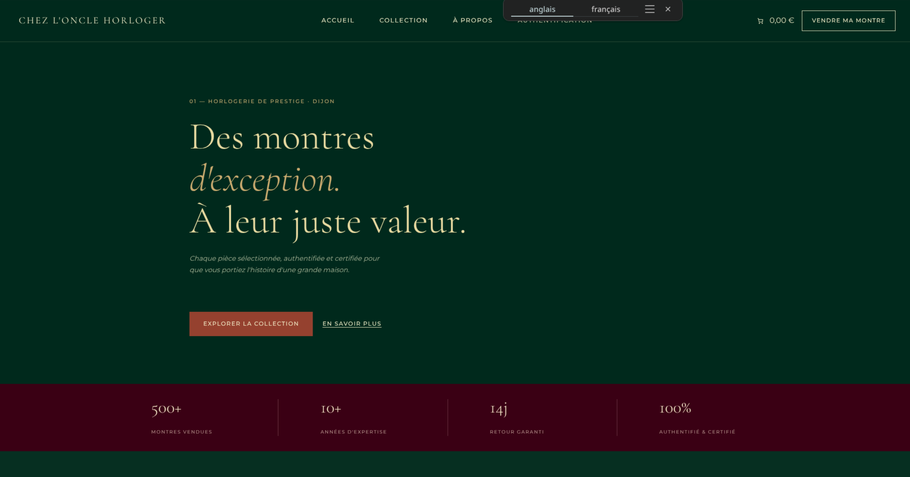
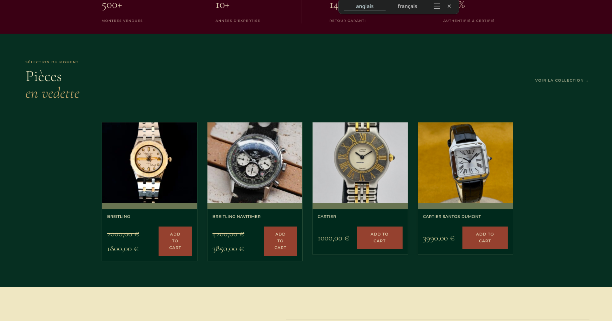
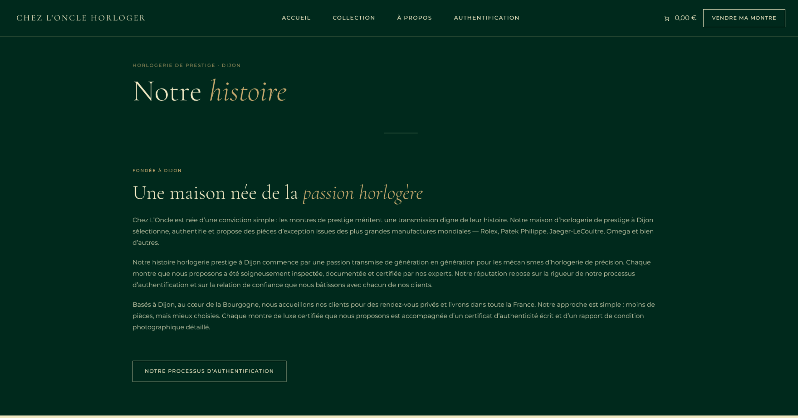

Boutique — Horloger Dijonnais
Projet réalisé pour un commanditaire fictif : un horloger spécialisé dans la vente de montres et pendules vintage d'occasion à Dijon. L'enjeu était de construire une boutique en ligne crédible et fonctionnelle, avec un catalogue produits gérable en autonomie. WooCommerce assure la gestion des articles, des stocks et des fiches produit, le tout intégré dans un thème WordPress adapté à l'univers horloger.
WordPress
WooCommerce
E-commerce


